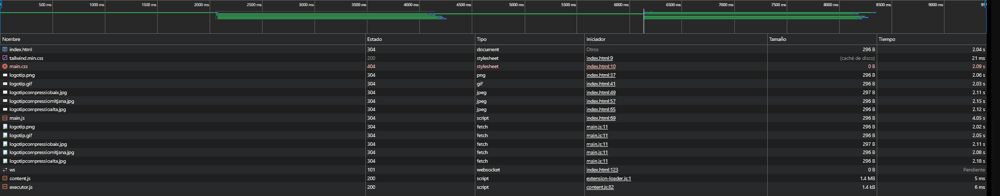

Què diu Lighthouse sobre el rendiment de les imatges?
Diu que les imatges no estan del tot optimitzades, i això fa que la pàgina trigui més a carregar. També comenta que caldria utilitzar formats d’imatge més moderns i definir les mides de les imatges per evitar problemes.
Quins són els problemes principals?
- Les imatges no estan en formats nous com WebP o AVIF, que són més
lleugers.
- No estan ben comprimides, així que ocupen massa espai.
- No tenen les mides definides, i això pot fer que el contingut es
mogui quan carreguen.
- No estan configurades per aprofitar la memòria cau.
Quines recomanacions ofereix?
- Passar les imatges a formats més nous com WebP o AVIF perquè pesin
menys.
- Comprimir millor les imatges per fer-les més petites.
- Afegir mides a les imatges (`width` i `height`) per evitar que
moguin el contingut.
- Configurar-les perquè es guardin a la memòria cau i es carreguin més
ràpid.
Analisí de Rendiment
Amb una connexió lenta 3G, les imatges triguen massa a carregar perquè no estan prou optimitzades. S’utilitzen formats antics com PNG i JPEG, i algunes imatges es carreguen repetidament. Caldria comprimir millor, usar formats moderns com WebP i fer servir tècniques com el lazy loading per millorar-ho.
